Посещение одного из величайших городов среди миров D&D: Глубоководья, Свободного Города мира Серого Ястреба, или даже сверхъестественного Сигила, Города Дверей, переполняет чувствами. Звучит речь на неисчислимом количестве различных языков. Запахи готовящейся еды на дюжинах различных кухонь смешиваются с запахами переполненных улиц и плохой санитарии. Строения бесчисленных архитектурных стилей отражают различное происхождение своих жителей. А сами жители — существа разного размера, формы и цвета, в одеждах разнообразных ослепительных стилей и оттенков — представители множества различных рас: от миниатюрных полуросликов и крепких дварфов, до величественнокрасивых эльфов, живущих среди людей различных этносов.
Полные древнего величия королевства и вырезанные в толще гор чертоги, удары кирок и молотков, раздающиеся в глубоких шахтах и пылающий кузнечный горн, верность клану и традициям и пылающая ненависть к гоблинам и оркам — вот вещи, объединяющие всех дварфов.
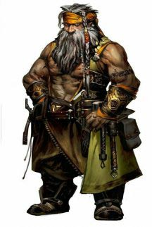Эльфы это волшебный народ, обладающий неземным изяществом, живущий в мире, но не являющийся его частью. Они живут в местах, наполненных воздушной красотой, в глубинах древних лесов или в серебряных жилищах, увенчанных сверкающими шпилями и переливающихся волшебным светом. Там лёгкие дуновения ветра разносят обрывки тихих мелодий и нежные ароматы. Эльфы любят природу и магию, музыку и поэзию, и всё прекрасное, что есть в мире.
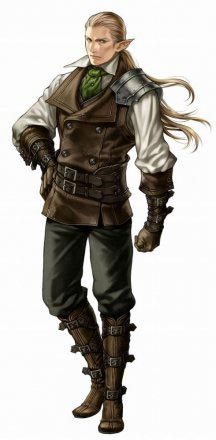Целью большинства полуросликов является домашний уют. Место, где можно поселиться в покое и тишине, подальше от мародёрствующих чудовищ и сражающихся армий. Огонь очага, сытная пища, добрая выпивка и добрая беседа. Хотя некоторые полурослики проживают свой век в удалённых сельских общинах, другие сбиваются в постоянно кочующие общины, влекомые открытыми дорогами, широкими горизонтами и возможностью открыть чудеса новых мест и новых людей. Но даже такие кочевники любят покой, вкусную еду, свой очаг и свой дом, даже если это повозка, трясущаяся по пыльной дороге или плот, плывущий по течению реки.
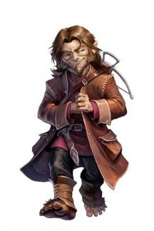В большинстве миров люди — это самая молодая из распространённых рас. Они поздно вышли на мировую сцену и живут намного меньше, чем дварфы, эльфы и драконы. Возможно, именно краткость их жизней заставляет их стремиться достигнуть как можно большего в отведённый им срок. А быть может, они хотят что-то доказать старшим расам, и поэтому создают могучие империи, основанные на завоеваниях и торговле. Что бы ни двигало ими, люди всегда были инноваторами и пионерами во всех мирах.
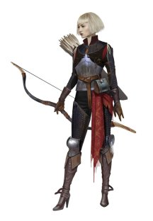Рождённые драконами, о чём говорит их название, драконорождённые идут гордо подняв голову по миру, который встречает их со страхом и непониманием. Сформированные драконьими богами или самими драконами, драконорождённые первоначально вылупились из драконьих яиц как новая раса, сочетающая в себе лучшие качества драконов и гуманоидов. Некоторые драконорождённые являются верными слугами истинных драконов, другие образуют ряды солдат в великих войнах, а некоторые ищут свою судьбу, не найдя себе призвания
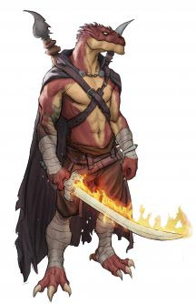Нескончаемый гул трудолюбия слышен там, где селятся сплочённые общества гномов. Гул пронзают и звуки погромче: то тут, то там раздаётся скрежет шестерней, отголоски взрыва, возгласы удивления или триумфа, и, особенно часто — звонкий смех. Гномы восторгаются жизнью, каждый миг наслаждаясь новым изобретением, открытием, исследованием, созиданием или шалостью.
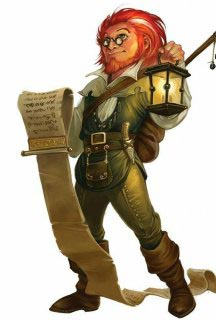Бродящие по двум мирам, но в действительности, не принадлежащие ни одному из них. Полуэльфы сочетают в себе, как некоторые говорят, лучшие качества обеих рас: человеческие любознательность, изобретательность и амбиции, приправленные изысканными чувствами, любовью к природе и ощущением прекрасного, свойственными эльфам. Некоторые полуэльфы живут среди людей, отгороженные эмоциональными и физическими различиями, наблюдая за старением друзей и возлюбленных, лишь слегка тронутые временем. Другие живут с эльфами в неподвластных времени эльфийских королевствах. Они стремительно растут, и достигают зрелости, пока их сверстники ещё остаются детьми. Многие полуэльфы не способны ужиться ни в одном обществе, и выбирают жизнь одиноких странников или объединяются с другими изгнанниками и неудачниками, чтобы отправиться к приключениям.
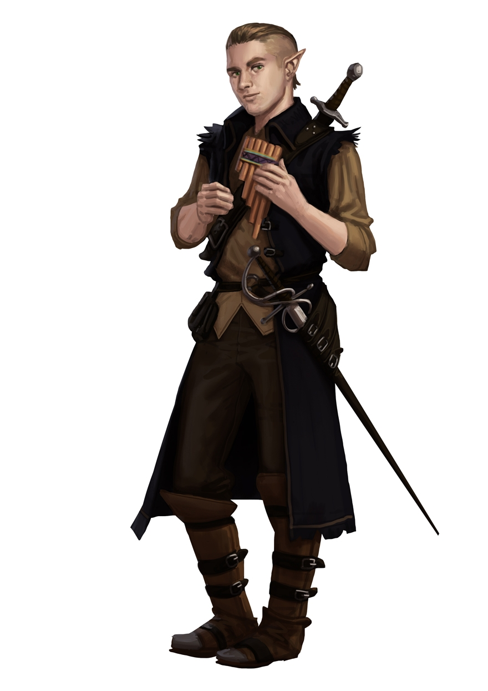Находясь ли под предводительством могучего колдуна, или стараясь установить мир после многолетнего конфликта, орки и племена людей иногда заключали союзы, объединяя силы в огромные орды, терроризирующие более цивилизованные государства по соседству. Когда такие союзы скреплялись узами брака, появлялись полуорки. Некоторые полуорки возвышались, становясь гордыми вождями племён. Их человечья кровь давала им преимущество над их чистокровными соперниками. Другие отправлялись в мир, чтоб доказать своё превосходство над представителями более цивилизованных народов. Многие из них становились искателями приключений, достигая величия благодаря своим могучим свершениям, и дурной славы, благодаря варварским нравам и дикарской ярости.
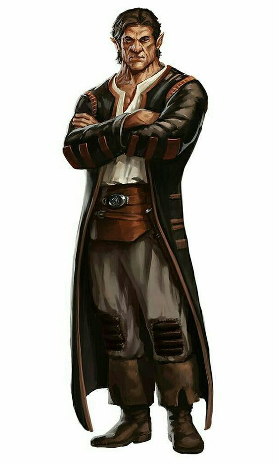Быть тифлингом — значит постоянно натыкаться на пристальные взгляды и перешёптывания, терпеть страдания и оскорбления, видеть страх и недоверие в глазах каждого встречного. Беда в том, что тифлинги знают причину этого — договор, заключённый много поколений назад и позволивший Асмодею — владыке Девяти Преисподних — внести вклад в их родословную. Такая внешность и природа — не их вина, а последствие древнего прегрешения, расплачиваться за которое предстоит им, их детям, и детям их детей.
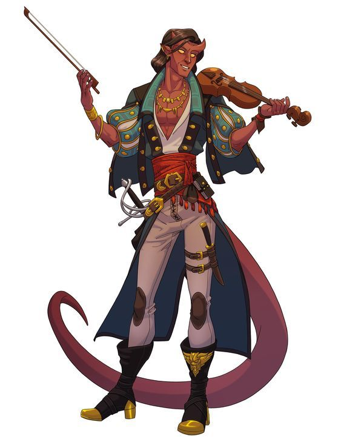Персонажи характеризуются не только расой и классом. Они — личности, с собственной историей, связями и возможностями, выходящими за определения классов и рас. Эта глава описывает детали, отличающие персонажей друг от друга, включая такие основы, как имя и физическое описание, правила предысторий и языков, личностные особенности и мировоззрение.
Напевая, и перебирая пальцами по старинному монументу, найденному в заброшенных руинах, полуэльфийка в обветшалом кожаном доспехе перебирает знания, мелькающие в её голове, вызывая силой магии, заключённой в песне, людей, которые построили этот монумент и загадочное предание, которое он изображает. Суровый человеческий воин ритмично ударяет своим мечом плашмя о доспех, задавая темп своего военного распева, вдохновляя спутников на отвагу и героизм. Магия его песни укрепляет и подбадривает их. Смеясь, и настраивая свою цитру, девушкагном накладывает тонкую магию на собравшихся дворян, гарантируя, что слова её спутников будут хорошо восприняты. Неважно, кем является бард: учёным, скальдом или проходимцем; он плетёт магию из слов и музыки, вдохновляя союзников, деморализуя противников, манипулируя сознанием, создавая иллюзии, и даже исцеляя раны.
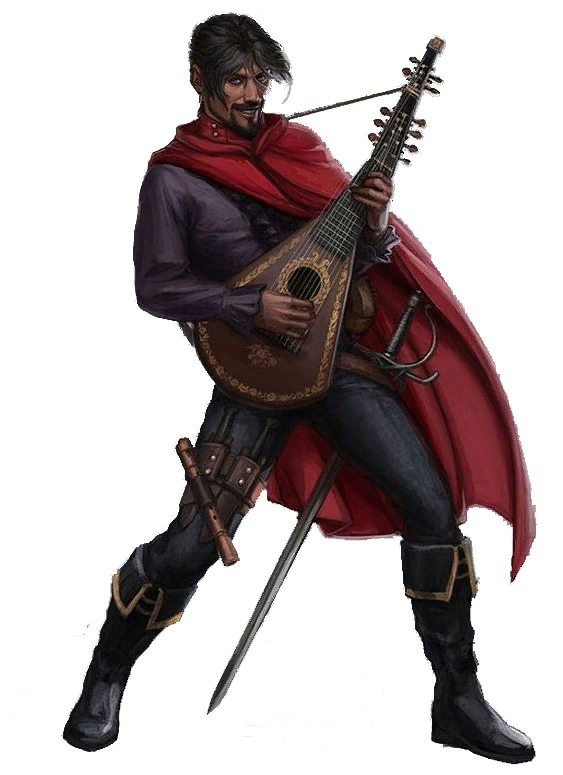Высокий, закутанный в шкуры дикарь пробирается сквозь метель, сжимая в руке свой топор. Он со смехом бросается на морозного великана, который посмел убить лося в стаде его народа. Полуорк рычит на храбреца, осмелившегося посягнуть на его первенство в племени, готовый свернуть ему шею голыми руками, как он поступил с предыдущими шестью соперниками. С пеной у рта дварф швыряет свой шлем в лицо напавшему дроу, и резко разворачивается, впечатав бронированный локоть в живот второму. Несмотря на разнообразие, всех варваров объединяет одно — их ярость. Необузданный, неугасимый и бездумный гнев. Не просто эмоция, их ярость как свирепость загнанного в угол хищника, как безжалостный удар урагана, как штормовые валы океана. Ярость некоторых из них проистекает из общения со свирепыми духами животных. Другие черпают её из злости на полную боли и страдания действительность. Но для каждого варвара ярость — это источник не только боевого безумия, но и невероятных рефлексов, стойкости, а также непревзойдённой силы.
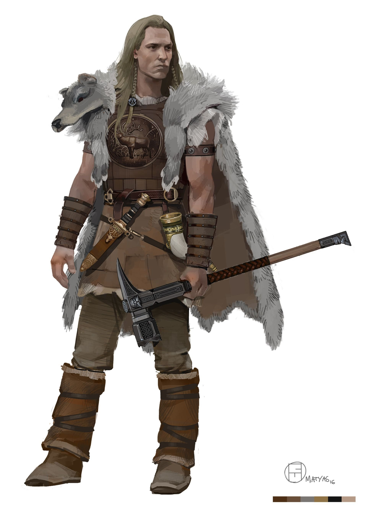Женщина, прикрываясь щитом и лязгая доспехами, устремляется в толпу гоблинов. Из-за её спины одетый в клёпанную кожу эльф осыпает врагов стрелами, выпуская их из своего изящного лука. Невдалеке от них полуорк выкрикивает приказы, указывая лучшее направление для атаки. Дварф в кольчуге выставил свой щит перед компаньоном, отражая смертельный удар дубины огра. Его напарник, полуэльф в чешуйчатом доспехе, закрутил два своих скимитара в сверкающем вихре и двинулся в обход огра, отыскивая брешь в его защите. Опытный гладиатор сражается на арене и хорошо знает, как использовать свои трезубец и сеть, чтобы опрокинуть противника и обойти его, вызывая ликование публики и получая тактическое преимущество. Меч его противника вспыхивает голубым светом и испускает сверкающую молнию. Все эти герои — воины. Представители, возможно, самого разнообразного класса в мире D&D. Странствующие рыцари, военачальники-завоеватели, королевские чемпионы, элитная пехота, бронированные наёмники и короли разбоя — будучи воинами, все они мастерски владеют оружием, доспехами, и приёмами ведения боя. А ещё они хорошо знакомы со смертью — они несут её сами, и часто смотрят в её холодные глаза.
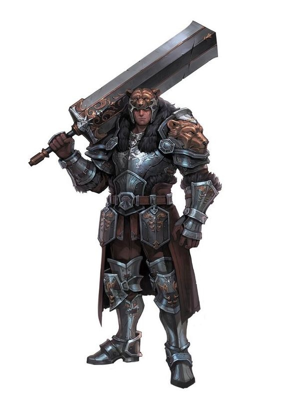Одетая в серебряные одежды, обозначающие её статус, эльфийка закрывает глаза, приглушает в своём сознании суматоху боя и начинает свой тихий напев. Движениями рук она сплетает перед собой заклинание и запускает крошечный шарик огня во вражеские ряды, где он взрывается потоками пламени, которые охватывают солдат. Проверив и перепроверив свои наброски, человек рисует затейливый магический круг мелом на голом каменном полу, затем посыпает железным порошком все линии и изящные кривые. Когда круг готов, он начинает монотонно читать длинное заклинание. Внутри круга появляется проход, из которого тянет запахом серы из потустороннего мира. Припав к полу на перекрёстке в подземелье, гном бросает небольшие костяшки с мистическими символами, бормоча над ними слова силы. Закрыв глаза, чтобы прочитать видения более чётко, он медленно кивает, затем открывает глаза и указывает на проход слева от себя. Волшебники — адепты высшей маги, объединяющиеся по типу своих заклинаний. Опираясь на тонкие плетения магии, пронизывающей вселенную, волшебники способны создавать заклинания взрывного огня, искрящихся молний, тонкого обмана и грубого контроля над сознанием. Их магия вызывает чудовищ с других планов бытия, предсказывает будущее и обращает поверженных врагов в зомби. Их самые могущественные заклинания могут превращать одно вещество в другое, вызывать метеориты с небес и открывать порталы в другие миры.
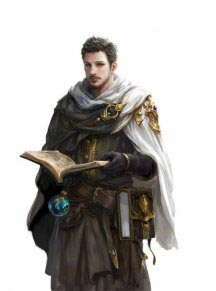Вскидывая вверх сучковатый посох из остролиста, эльф вызывает буйство небесной стихии и обрушивает разряды молний на орков, посмевших угрожать его лесу огнём. Затаившись высоко в кроне дерева, человек в облике леопарда смотрит из джунглей на чужеродную архитектуру храма Злой Стихии Воздуха и пристально наблюдает за действиями культистов. Рубя клинком из чистого пламени, полуэльф бросается в гущу армии скелетов, чтобы уничтожить кощунственную магию, возвратившую им извращённое подобие жизни. Призывая стихии или подражая животным, друиды воплощают незыблемость, приспособляемость и гнев природы. Они ни в коем случае не владыки природы — вместо этого друиды ощущают себя частью её неодолимой воли.
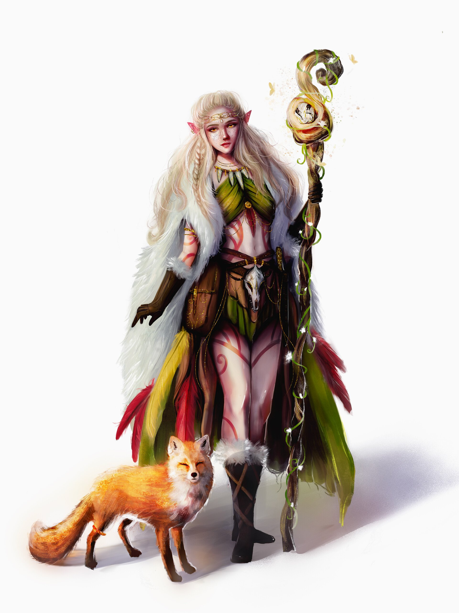Воздев руки и глаза к небу и запев молитву, эльф начинает сиять внутренним светом, который проливается на боевых товарищей и лечит их. Распевая песнь славы, дварф широко размахивает своим топором, прорубаясь через ряды орков, выступивших против него, крича хвалу богам с каждым павшим врагом. Посылая проклятье на силы нежити, женщина поднимает свой священный символ, из которого льётся свет, отбрасывающий зомби, толпящихся около её спутников. Жрецы являются посредниками между миром смертных и далёкими мирами богов. Настолько же разные, насколько боги, которым они служат, жрецы воплощают работу своих божеств. В отличие от обычного проповедника, жрец наделён божественной магией.
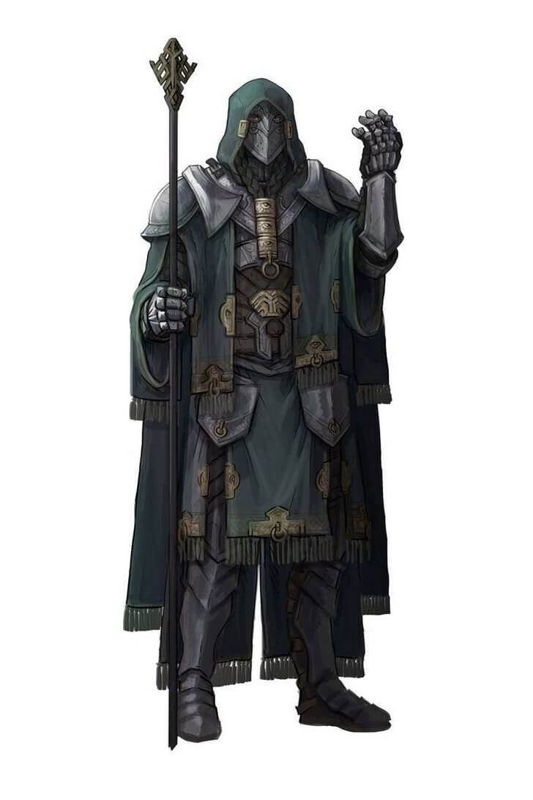Молодой эльф в золотых одеждах, с псевдодраконом, свернувшимся у него на плече, тепло улыбается дворцовому стражу, вплетая магическое очарование в свои сладкие речи, чтобы подчинить его своей воле. Когда в руках морщинистой старухи оживает пламя, она шепчет тайное имя своего демонического покровителя, вливая в заклинание зловещую магию. Переведя взгляд с потрёпанного тома на необычное сочетание звёзд над головой, тифлинг с дикими глазами начинает мистический ритуал, который откроет проход в далёкий мир. Колдуны — искатели знаний, что скрываются в ткани мультивселенной. Через договор, заключённый с таинственными существами сверхъестественной силы, колдуны открывают для себя магические эффекты, как едва уловимые, так и впечатляющие воображение. Колдуны подпитывают свои силы древними знаниями таких существ как феи, демоны, дьяволы, карги и чужеродные сущности Дальнего Предела.
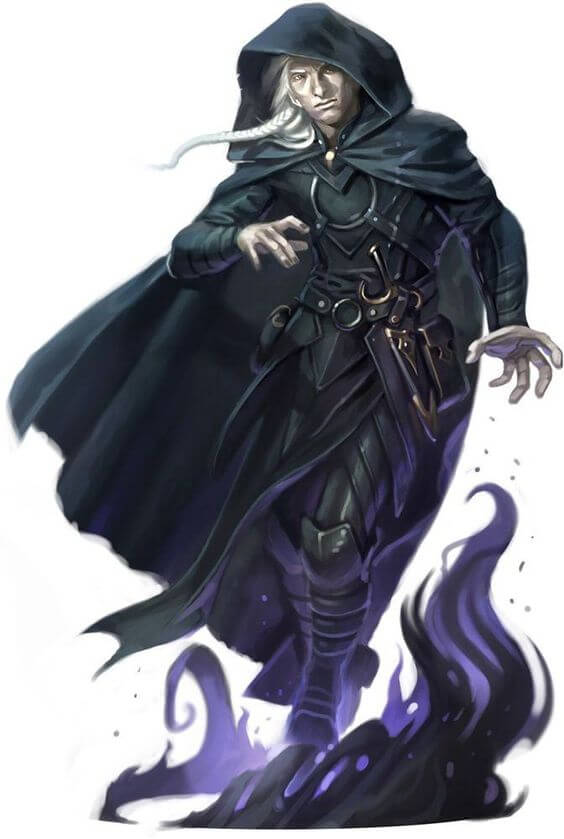Её кулаки превратились в марево, отражая обрушившийся град стрел. Полуэльфийка перескочила баррикаду и бросилась в плотные ряды хобгоблинов. Кружась среди них, она раздавала удары во все стороны, расшвыривая противников, пока не осталась единственной, стоящей на ногах. Глубоко вздохнув, покрытый татуировками человек принял боевую стойку. Когда первый из атакующих орков приблизился к нему, он выдохнул, и поток огня, с рёвом вырвавшись из его рта, поглотил противника. Двигаясь бесшумно, как сама ночь, одетый во всё чёрное полурослик вступил в пятно тени под аркой, и мгновенно появился из другой чернильной тени на балконе, на расстоянии броска камня. Он медленно высвободил клинок из укутанных тканью ножен, и сквозь открытое окно взглянул на деспотичного принца, столь уязвимого во сне. Вне зависимости от выбранной дисциплины, всех монахов объединяет одно — возможность управлять энергией, текущей в их телах. Вне зависимости от того, проявляется ли она выдающимися боевыми способностями, или чуть заметным усилением защиты и скорости, эта энергия влияет на всё, что делает монах.
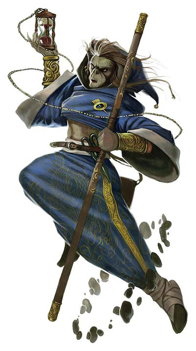Закованный в латы, сверкающие на солнце, несмотря на пыль и грязь долгого путешествия, человек складывает свой меч и щит и касается ладонями смертельно раненного мужчины. Божественное сияние исходит из его рук, и раны мужчины затягиваются, а глаза широко раскрываются в изумлении. Дварф пригнулся к земле за камнем. Его чёрный плащ делал его почти невидимым в ночи, и он смотрел, как шайка орков праздновала недавнюю победу. Он тихо крадётся к ним и шепчет свою присягу, и двое орков умирают ещё до того, как понимают, что он здесь был. Серебряные волосы сверкают в лучах света, которые, кажется, льются только на торжественно смеющегося эльфа. Его копьё вспыхивает, подобно его глазам, когда он снова и снова наносит удары уродливому великану, до тех пор, пока его свет не преодолевает отвратительную тьму. Вне зависимости от происхождения и миссии, паладинов объединяет их клятва противостоять силам зла. Принесённая ли перед алтарём бога и заверенная священником, или же на священной поляне перед духами природы и феями, или в момент отчаяния и горя смерти, присяга паладина — могущественный договор. Это источник силы, который превращает набожного воина в благословенного героя.
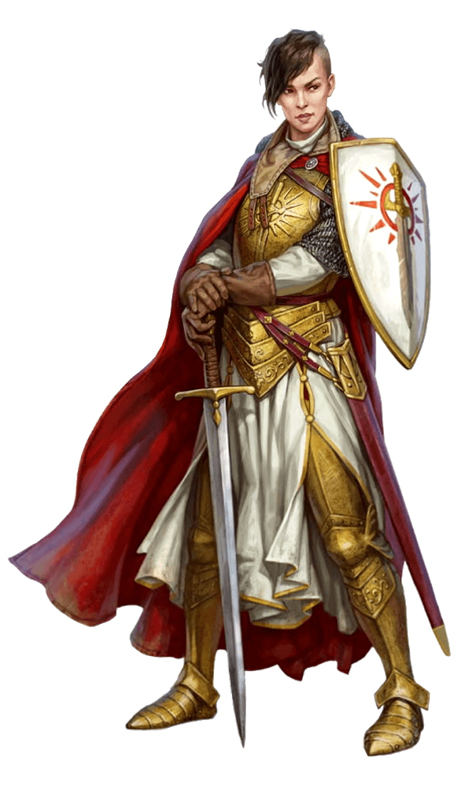Дав спутникам сигнал ждать, полурослик крадётся по подземному залу. Он прижимает ухо к двери, потом вытаскивает набор инструментов и вскрывает замок в мгновение ока. Затем он исчезает в тени, пока его друг воин идёт вперёд, чтобы пинком открыть дверь. Человек скрывается в тени переулка, в то время как его сообщница готовит свою часть засады. Когда их цель — известный работорговец — проходит по переулку, сообщница издаёт крик, работорговец начинает выяснять, что произошло, и лезвие убийцы перерезает его горло прежде, чем он может издать звук. Подавив смешок, гномиха шевелит пальцами и с помощью магии снимает ключи с пояса охранника. Через миг ключи в её руке, дверь камеры открыта, она и её спутники могут спокойно совершать побег. Плуты полагаются на мастерство, скрытность и уязвимые места врагов, чтобы взять верх в любой ситуации. У них достаточно сноровки для нахождения решения в любой ситуации, демонстрируя находчивость и гибкость, которые являются краеугольным камнем любой успешной группы искателей приключений.
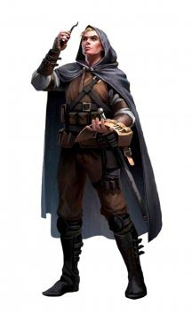Грубо и дико выглядящий человек в одиночку следует в тенях деревьев за орками, которые, как он знает, планируют напасть на расположенную рядом ферму. Зажав по короткому мечу в каждой руке, он становится стальным вихрем, вырезающим одного врага за другим. Увернувшись от конуса морозного воздуха, эльфийка встаёт на ноги и натягивает тетиву лука, чтобы пустить стрелу в белого дракона. Невзирая на волну страха, которая исходит от дракона подобно холоду его дыхания, она посылает одну стрелу за другой, чтоб найти уязвимые места между толстыми чешуйками. Подняв высоко руку, полуэльф свистит ястребу, кружащему высоко над ним, призывая птицу к себе. Нашёптывая указания на эльфийском, он показывает на выслеженного совомед а и посылает ястреба, чтобы отвлечь существо, пока он готовит свой лук. Вдали от суеты городов и посёлков, за изгородями, которые защищают самые далёкие фермы от ужасов дикой природы, среди плотно стоящих деревьев, беспутья лесов и на просторах необъятных равнин следопыты несут свой бесконечный дозор.
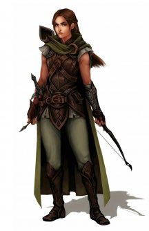Золотые глаза вспыхивают, человек протягивает вперёд руку и высвобождает всепоглощающее пламя, что горит в его жилах. Пока адское пламя бушует вокруг его врагов, кожистые крылья раскрываются у него за спиной, и он взмывает в воздух. Длинные волосы развеваются от магического ветра, полуэльф широко разводит руки в стороны и запрокидывает голову. Моментально подняв его над землёй, волны магической энергии проходят сквозь него и выплёскиваются в окружающее пространство громадной вспышкой молний. Крадущийся за сталагмитом полурослик указывает пальцем на троглодита. Огненная струя устремляется из его пальца к существу. С усмешкой он прячется обратно за скалу, не подозревая, что дикая магия изменила цвет его кожи на ярко-синий. Чародеи являются носителями магии, дарованной им при рождении их экзотической родословной, неким потусторонним влиянием или воздействием неизвестных вселенских сил. Никто не может обучиться чародейству, как, например, выучить язык, так же как никто не может обучить, как прожить легендарную жизнь. Никто не может избрать путь чародейства, сила сама выбирает носителя.
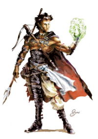